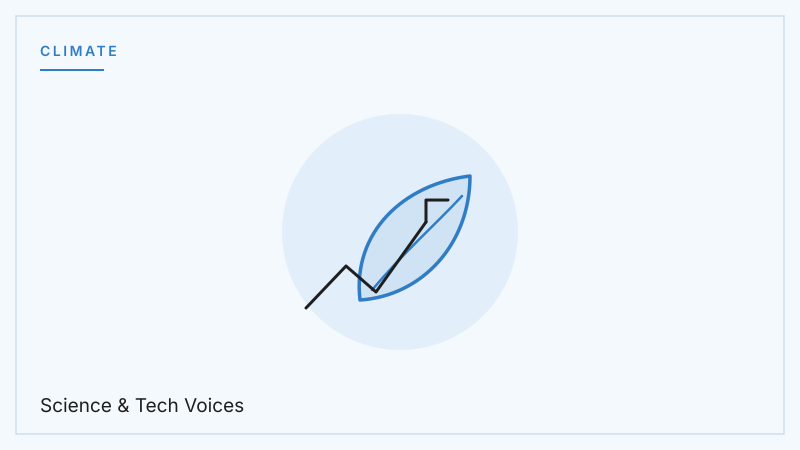
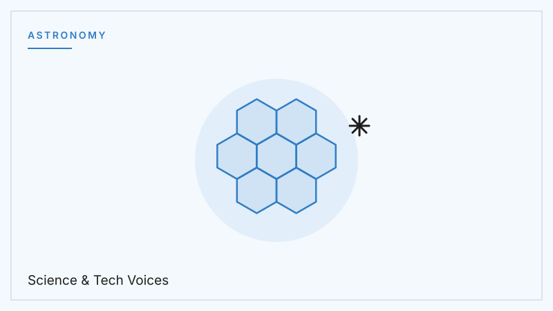

AI & Society
Large Language Models: How Machines Learned Our Language
The systems behind modern chatbots are changing how we search, write, and learn. Here is how they actually work — and where their limits are.
The Archive
Twelve deep dives into the science and technology shaping our future. Every article written by Kerem Tüzün.
The systems behind modern chatbots are changing how we search, write, and learn. Here is how they actually work — and where their limits are.

A bacterial immune system became the most powerful gene-editing tool ever discovered. Medicine may never be the same.

We now know of thousands of planets orbiting other stars. The next question is the biggest one science has ever asked: is anyone home?

The battery in your phone has barely changed in 30 years. The next leap — replacing liquid with solid — could change everything that runs on electricity.

Qubits, superposition, and how quantum computing could solve problems classical machines never will.

Algorithms now make decisions that affect billions of people. How do we make sure those decisions are fair, transparent, and accountable?

From CRISPR to biosensor chips, a new era begins where living systems and engineering converge in remarkable ways.

Engineers and scientists are seriously planning to put humans on Mars. What does it actually take to get there and survive?

Neuralink and similar technologies aim to connect the human brain directly to digital systems. What does that mean for medicine and society?

Solar costs have collapsed, wind energy is breaking records, and carbon capture is maturing. Is there real reason for hope?

The most powerful telescope ever built is showing us the universe's earliest galaxies. The first images left scientists in tears.

In December 2022, scientists achieved net energy gain from fusion for the first time in history. What does this breakthrough mean?